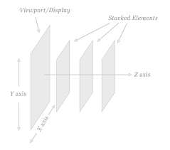
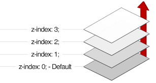
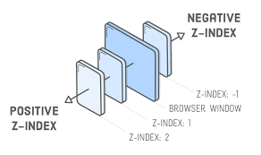

z-index
Изменяет положение элемента по оси Z
Ось Z - линия перпендикулярная экрану

Ось Z - значение по умолчанию равно 0

Ось Z - допустимы отрицательные значения

Z-index
Контекст Z-index
Новый контекст образуется при наличии у предков элемента с position, отличным от static таких свойств, как:
- элементы соседи с position: absolute реагируют на z-index
- элементы потомки с position: absolute не реагируют на z-index
- opacity со значением, меньше 1
- opacity со значением, меньше 1
- filter со значением, отличным от none
Z-index